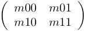

| Safe Haskell | None |
|---|
Quipper.Libraries.Simulation.QuantumSimulation
Description
This module provides functions for simulating circuits, for testing and debugging purposes. It borrows ideas from the implementation of the Quantum IO Monad.
This module provides the internal implementation of the library, and can be imported by other libraries. The public interface to simulation is Quipper.Libraries.Simulation.
Synopsis
- trace :: Bool -> String -> a -> a
- type GateR r = (Cplx r, Cplx r, Cplx r, Cplx r)
- scale :: Floating r => Cplx r -> GateR r -> GateR r
- reverseR :: Floating r => GateR r -> GateR r
- gateQ :: Floating r => String -> GateR r
- gateQinv :: Floating r => String -> InverseFlag -> GateR r
- expC :: Floating r => Cplx r -> Cplx r
- piC :: Floating r => Cplx r
- rotQ :: Floating r => String -> Timestep -> GateR r
- rotQinv :: Floating r => String -> InverseFlag -> Timestep -> GateR r
- expZtR :: Floating r => r -> GateR r
- gPhase :: Floating r => r -> GateR r
- gateC :: String -> [Bool] -> Bool
- data Vector n a = Vector [(a, n)]
- type Amplitudes r = Vector (Cplx r) (Map Qubit Bool)
- type ProbabilityDistribution r a = Vector r a
- type QuantumTrace r = ProbabilityDistribution r [Bool]
- normalize :: Floating r => QuantumTrace r -> QuantumTrace r
- data QuantumState r = QState {
- next_wire :: Wire
- quantum_state :: Amplitudes r
- traces :: [QuantumTrace r]
- namespace :: Namespace
- trace_flag :: Bool
- empty_quantum_state :: Floating r => Bool -> r -> QuantumState r
- classical_control :: Signed (B_Endpoint Qubit Bool) -> Bool
- classical_controls :: Ctrls Qubit Bool -> Bool
- qc_control :: Map Qubit Bool -> Signed (B_Endpoint Qubit Bool) -> Bool
- qc_controls :: Map Qubit Bool -> Ctrls Qubit Bool -> Bool
- magnitude :: Floating r => Cplx r -> r
- split :: (Floating r, Eq r, Ord r) => Amplitudes r -> Qubit -> (r, Amplitudes r, Amplitudes r)
- class (Floating r, Monad m) => PMonad r m where
- merge :: r -> a -> a -> m a
- merge_with_result :: PMonad r m => r -> a -> a -> m (Bool, a)
- get_trace :: Floating r => [Qubit] -> Amplitudes r -> QuantumTrace r
- add :: Floating r => (Map Qubit Bool, Cplx r) -> Amplitudes r -> Amplitudes r
- apply :: (Floating r, Eq r) => (Map Qubit Bool -> Amplitudes r) -> Amplitudes r -> Amplitudes r
- vector :: Floating r => (Map Qubit Bool -> Map Qubit Bool) -> Map Qubit Bool -> Amplitudes r
- if_controls :: Floating r => Ctrls Qubit Bool -> (Map Qubit Bool -> Amplitudes r) -> Map Qubit Bool -> Amplitudes r
- performGateQ :: Floating r => GateR r -> Qubit -> Map Qubit Bool -> Amplitudes r
- simulation_transformer :: (PMonad r m, Ord r) => Transformer (StateT (QuantumState r) m) Qubit Bool
- simulation_dynamic_transformer :: (PMonad r m, Ord r) => DynamicTransformer (StateT (QuantumState r) m) Qubit Bool
- simulate_transform_unary :: (PMonad r m, Ord r) => (QCData qa, QCData qb, QCData (QCType Bit Bit qb), QCType Bool Bool qb ~ QCType Bool Bool (QCType Bit Bit qb)) => (qa -> Circ qb) -> BType qa -> StateT (QuantumState r) m (QCType Qubit Bool (QCType Bit Bit qb))
- qdata_concrete_shape :: QData qa => BType qa -> qa
- qdata_concrete_bindings :: QData qa => BType qa -> Bindings Qubit Bool
- qdata_to_basis :: QData qa => BType qa -> Map Qubit Bool
- qdata_vector_to_amplitudes :: (QData qa, Floating r) => Vector (Cplx r) (BType qa) -> Amplitudes r
- basis_to_qdata :: QData qa => qa -> Map Qubit Bool -> BType qa
- amplitudes_to_qdata_vector :: (QData qa, Floating r) => qa -> Amplitudes r -> Vector (Cplx r) (BType qa)
- simulate_amplitudes_unary :: (PMonad r m, Eq r, Ord r, QData qa, QData qb, qb ~ QCType Qubit Bool qb) => (qa -> Circ qb) -> Vector (Cplx r) (BType qa) -> m (Vector (Cplx r) (BType qb))
- sim_amps :: (RandomGen g, Floating r, Random r, Ord r, QData qa, QData qb, qb ~ QCType Qubit Bool qb, Ord (BType qb)) => g -> (qa -> Circ qb) -> Map (BType qa) (Cplx r) -> Map (BType qb) (Cplx r)
- run_unary :: (Floating r, Random r, Ord r, RandomGen g, QCData qa, QCData qb, QCData (QCType Bit Bit qb), QCType Bool Bool qb ~ QCType Bool Bool (QCType Bit Bit qb)) => g -> r -> (qa -> Circ qb) -> BType qa -> QCType Qubit Bool (QCType Bit Bit qb)
- run_unary_trace :: (Floating r, Random r, Ord r, RandomGen g, QCData qa, QCData qb, QCData (QCType Bit Bit qb), QCType Bool Bool qb ~ QCType Bool Bool (QCType Bit Bit qb)) => g -> r -> (qa -> Circ qb) -> BType qa -> [QuantumTrace r]
- run_unary_io :: (Floating r, Random r, Ord r, QCData qa, QCData qb, QCData (QCType Bit Bit qb), QCType Bool Bool qb ~ QCType Bool Bool (QCType Bit Bit qb)) => r -> (qa -> Circ qb) -> BType qa -> IO (QCType Qubit Bool (QCType Bit Bit qb))
- run_unary_trace_io :: (Floating r, Random r, Ord r, QCData qa, QCData qb, QCData (QCType Bit Bit qb), QCType Bool Bool qb ~ QCType Bool Bool (QCType Bit Bit qb)) => r -> (qa -> Circ qb) -> BType qa -> IO [QuantumTrace r]
- sim_unary :: (Floating r, Ord r, QCData qa, QCData qb, QCData (QCType Bit Bit qb), QCType Bool Bool qb ~ QCType Bool Bool (QCType Bit Bit qb)) => r -> (qa -> Circ qb) -> BType qa -> ProbabilityDistribution r (QCType Qubit Bool (QCType Bit Bit qb))
- run_generic :: (Floating r, Random r, Ord r, RandomGen g, QCData qa, QCDataPlus qb, QCurry qfun qa qb, Curry qfun' (QCType Bool Bool qa) (QCType Qubit Bool (QCType Bit Bit qb))) => g -> r -> qfun -> qfun'
- run_generic_trace :: (Floating r, Random r, Ord r, RandomGen g, QCData qa, QCDataPlus qb, QCurry qfun qa qb, Curry qfun' (QCType Bool Bool qa) [QuantumTrace r]) => g -> r -> qfun -> qfun'
- run_generic_io :: (Floating r, Random r, Ord r, QCData qa, QCDataPlus qb, QCurry qfun qa qb, Curry qfun' (QCType Bool Bool qa) (IO (QCType Qubit Bool (QCType Bit Bit qb)))) => r -> qfun -> qfun'
- run_generic_trace_io :: (Floating r, Random r, Ord r, QCData qa, QCDataPlus qb, QCurry qfun qa qb, Curry qfun' (QCType Bool Bool qa) (IO [QuantumTrace r])) => r -> qfun -> qfun'
- sim_generic :: (Floating r, Ord r, QCData qa, QCDataPlus qb, QCurry qfun qa qb, Curry qfun' (QCType Bool Bool qa) (ProbabilityDistribution r (QCType Qubit Bool (QCType Bit Bit qb)))) => r -> qfun -> qfun'
Documentation
trace :: Bool -> String -> a -> a Source #
We define our own trace function that only calls trace if the boolean argument is true.
Simulation as a Transformer
The quantum simulator takes a Quipper circuit producing function, and uses a transformer to simulate the resulting circuit, one gate at a time. This allows the simulation to progress in a lazy manner, allowing dynamic lifting results to be passed back to the circuit producing function as and when they are required (to generate further gates in the circuit).
The implementation of the quantum simulator makes use of a State monad to carry an underlying quantum state throughout the computation. This State is updated by each quantum operation within the circuit. A quantum state is a vector of basis states, along with complex amplitudes.
type GateR r = (Cplx r, Cplx r, Cplx r, Cplx r) Source #
Gates that act on a single qubit can be defined by essentially a 2-by-2 matrix. A GateR is written by rows, such that a matrix:

would be written as (m00,m01,m10,m11).
scale :: Floating r => Cplx r -> GateR r -> GateR r Source #
Scalar multiplication of a 2-by-2 matrix by a given scalar.
reverseR :: Floating r => GateR r -> GateR r Source #
The inverse of a GateR is its conjugate transpose.
gateQ :: Floating r => String -> GateR r Source #
A simple pattern matching function that gives each "gate name" a GateR representation. Adding (single qubit) quantum gates to this function will give them an implementation in the simulator. Any single qubit named quantum gate that needs to be simulated must have a clause in this function, along with a given GateR that is its matrix representation. Note that unitarity is not enforced, so defined gates must be checked manually to be unitary operators.
Example Gates: gateQ "x" = (0,1,1,0) gateQ "hadamard" = (h, h, h,-h) where h = (1/sqrt 2)
gateQinv :: Floating r => String -> InverseFlag -> GateR r Source #
Like gateQ, but also conditionally invert the gate depending
on InverseFlag.
rotQ :: Floating r => String -> Timestep -> GateR r Source #
Like gateQ, but takes the name of a rotation and a real parameter.
rotQinv :: Floating r => String -> InverseFlag -> Timestep -> GateR r Source #
Like rotQ, but also conditionally invert the gate depending on
InverseFlag.
gateC :: String -> [Bool] -> Bool Source #
Translate a classical gate name into a boolean function. Adding classical gates to this function will give them an implementation in the simulator.
Example Gate: gateC "if" [a,b,c] = if a then b else c
The type of vectors with scalars in n over the basis a. A vector is simply a list of pairs.
Constructors
| Vector [(a, n)] |
Instances
| (Floating r, Eq r) => PMonad r (Vector r) # |
|
| Num n => Monad (Vector n) # | Any numeric indexed vector forms a |
| Num n => Functor (Vector n) # | |
| Num n => Applicative (Vector n) # | |
| (Show a, Eq a, Num n, Eq n, Show n) => Show (Vector n a) # | We can show certain vectors, ignoring any 0 probabilities, and combining equal terms. |
type Amplitudes r = Vector (Cplx r) (Map Qubit Bool) Source #
An amplitude distribution gives each classical basis state an amplitude.
type ProbabilityDistribution r a = Vector r a Source #
A probability distribution gives each element a probability.
type QuantumTrace r = ProbabilityDistribution r [Bool] Source #
A QuantumTrace is essentially a probability distribution for the current state of the qubits that have been traced. We can represent this using a Vector. The list of Booleans is in the same order as the list of Qubits that was being traced.
normalize :: Floating r => QuantumTrace r -> QuantumTrace r Source #
Normalizing is used to make sure the probabilities add up to 1.
data QuantumState r Source #
A QuantumState is the data structure containing the state that we update
throughout the simulation. We need to keep track of the next available wire,
and a quantum state in the form of a distribution of basis states. We also
track a list of quantum traces, so that we have a "tracing" mechanism during
the execution of quantum circuits.
Constructors
| QState | |
Fields
| |
empty_quantum_state :: Floating r => Bool -> r -> QuantumState r Source #
When we start a simulation, we need an empty starting state.
classical_control :: Signed (B_Endpoint Qubit Bool) -> Bool Source #
It doesn't make sense having a quantum control on a classical gate, so we can throw an error if that is the case, and just collect the boolean result otherwise.
classical_controls :: Ctrls Qubit Bool -> Bool Source #
Map the classical_control function to all the controls, and take the
and of the result
qc_control :: Map Qubit Bool -> Signed (B_Endpoint Qubit Bool) -> Bool Source #
When we want a quantum control, we will be working with one "basis state" at a time, and can look up the qubit's value in that basis state to see whether the control firs.
qc_controls :: Map Qubit Bool -> Ctrls Qubit Bool -> Bool Source #
Map the qc_control function to all the controls (under the given basis
state), and take the and of the result.
split :: (Floating r, Eq r, Ord r) => Amplitudes r -> Qubit -> (r, Amplitudes r, Amplitudes r) Source #
The split function splits a Amplitude distribution, by
partitioning it around the state of the given qubit within each basis state. It
also returns the probability of the qubit being True within the given
Amplitudes. This function is used when we want to measure a qubit.
class (Floating r, Monad m) => PMonad r m where Source #
A PMonad is a Monad enriched with a merge function that takes a probability,
and two results, and returns a merged version of these results under the given
monad. This idea is taken directly from QIO.
Instances
| (Floating r, Random r, Ord r) => PMonad r IO # | IO forms a PMonad, where results are merged by choosing one probabilistically using a random number. |
| (Floating r, Eq r) => PMonad r (Vector r) # |
|
| (Floating r, Random r, Ord r, RandomGen g) => PMonad r (State g) # | A State Monad holding a |
merge_with_result :: PMonad r m => r -> a -> a -> m (Bool, a) Source #
We can merge two measurement outcomes, and explicitly keep the first outcome as the True result, and the second as the False result.
get_trace :: Floating r => [Qubit] -> Amplitudes r -> QuantumTrace r Source #
The get_trace function returns a probability distribution of
the state of a list of qubits within a given amplitude
distribution.
add :: Floating r => (Map Qubit Bool, Cplx r) -> Amplitudes r -> Amplitudes r Source #
Add an amplitude to an amplitude distribution, combining (adding) the amplitudes for equal states in the distribution.
apply :: (Floating r, Eq r) => (Map Qubit Bool -> Amplitudes r) -> Amplitudes r -> Amplitudes r Source #
The apply' function is used to apply a function on "basis states" to an entire amplitude distribution.
vector :: Floating r => (Map Qubit Bool -> Map Qubit Bool) -> Map Qubit Bool -> Amplitudes r Source #
Lift a function that returns a single basis state, to a function that returns an amplitude distribution (containing a singleton).
if_controls :: Floating r => Ctrls Qubit Bool -> (Map Qubit Bool -> Amplitudes r) -> Map Qubit Bool -> Amplitudes r Source #
apply the given function only if the controls fire.
performGateQ :: Floating r => GateR r -> Qubit -> Map Qubit Bool -> Amplitudes r Source #
performGateQ defines how a single qubit gate is applied to a
quantum state. The application of a GateR to a qubit in a single
basis state can split the state into a pair of basis states with
corresponding amplitudes.
simulation_transformer :: (PMonad r m, Ord r) => Transformer (StateT (QuantumState r) m) Qubit Bool Source #
The simulation_transformer is the actual transformer that does the
simulation. The type of the simulation_transformer shows that Qubits are
kept as qubits, but Bits are turned into Boolean values, i.e., the results of
the computation. We use a StateT Monad, acting over the IO Monad, to store a
QuantumState throughout the simulation. This means we carry a state, but also
have access to the IO Monad's random number generator (for probabilistic
measurement).
simulation_dynamic_transformer :: (PMonad r m, Ord r) => DynamicTransformer (StateT (QuantumState r) m) Qubit Bool Source #
The simulation_transformer is also Dynamic, as the simulated wire states can simply be used to perform dynamic liftings.
simulate_transform_unary :: (PMonad r m, Ord r) => (QCData qa, QCData qb, QCData (QCType Bit Bit qb), QCType Bool Bool qb ~ QCType Bool Bool (QCType Bit Bit qb)) => (qa -> Circ qb) -> BType qa -> StateT (QuantumState r) m (QCType Qubit Bool (QCType Bit Bit qb)) Source #
Apply the simulation_dynamic_transformer to a (unary) circuit
generating function.
qdata_concrete_shape :: QData qa => BType qa -> qa Source #
In order to simulate a circuit using an input basis vector, we need to supply each quantum leaf, with a concrete (i.e., not a dummy) qubit.
qdata_concrete_bindings :: QData qa => BType qa -> Bindings Qubit Bool Source #
In order to simulate a circuit using an input basis vector, we need to supply the transformer with a concrete set of qubit bindings.
qdata_to_basis :: QData qa => BType qa -> Map Qubit Bool Source #
As a helper function, in order to simulate a circuit using an input basis vector, we need to be able to convert each basis into a map from concrete qubits to their value in the given basis.
qdata_vector_to_amplitudes :: (QData qa, Floating r) => Vector (Cplx r) (BType qa) -> Amplitudes r Source #
In order to simulate a circuit using an input basis vector, we need to be able to convert the basis vector into a quantum state suitable for use by the simulator i.e. of type Amplitudes.
basis_to_qdata :: QData qa => qa -> Map Qubit Bool -> BType qa Source #
As a helper function, in order to simulate a circuit using an input basis vector, we need to be able to convert a map from concrete qubits to their value into a basis of the given concrete shape.
amplitudes_to_qdata_vector :: (QData qa, Floating r) => qa -> Amplitudes r -> Vector (Cplx r) (BType qa) Source #
In order to simulate a circuit using an input basis vector, we need to be able to convert the quantum state (i.e. of type Amplitudes) into a basis vector.
simulate_amplitudes_unary :: (PMonad r m, Eq r, Ord r, QData qa, QData qb, qb ~ QCType Qubit Bool qb) => (qa -> Circ qb) -> Vector (Cplx r) (BType qa) -> m (Vector (Cplx r) (BType qb)) Source #
Apply the simulation_dynamic_transformer to a (unary) circuit generating
function, starting with the quantum state set to the given vector of base states
and returning the resulting vector of base states.
sim_amps :: (RandomGen g, Floating r, Random r, Ord r, QData qa, QData qb, qb ~ QCType Qubit Bool qb, Ord (BType qb)) => g -> (qa -> Circ qb) -> Map (BType qa) (Cplx r) -> Map (BType qb) (Cplx r) Source #
Input a source of randomness, a quantum circuit, and an initial state (represented as a map from basis vectors to amplitudes). Simulate the circuit and return the final state. If the circuit includes measurements, the simulation will be probabilistic.
The type of this heavily overloaded function is difficult to read. It has, for example, the following types:
sim_amps :: StdGen -> (Qubit -> Circ Qubit) -> Map Bool (Cplx Double) -> Map Bool (Cplx Double) sim_amps :: StdGen -> ((Qubit,Qubit) -> Circ Qubit) -> Map (Bool,Bool) (Cplx Double) -> Map Bool (Cplx Double)
and so forth. Note that instead of Double, another real number
type, such as FixedPrec e, can be used.
run_unary :: (Floating r, Random r, Ord r, RandomGen g, QCData qa, QCData qb, QCData (QCType Bit Bit qb), QCType Bool Bool qb ~ QCType Bool Bool (QCType Bit Bit qb)) => g -> r -> (qa -> Circ qb) -> BType qa -> QCType Qubit Bool (QCType Bit Bit qb) Source #
Input a source of randomness, a real number, a circuit, and a basis state. Then simulate the circuit probabilistically. Measure the final state and return the resulting basis vector.
The real number argument is a dummy and is never evaluated; its only purpose is to specify the type of real numbers that will be used during the simulation.
run_unary_trace :: (Floating r, Random r, Ord r, RandomGen g, QCData qa, QCData qb, QCData (QCType Bit Bit qb), QCType Bool Bool qb ~ QCType Bool Bool (QCType Bit Bit qb)) => g -> r -> (qa -> Circ qb) -> BType qa -> [QuantumTrace r] Source #
Like run_unary, but return the list of QuantumTrace elements
that were generated during the computation. This is useful for
checking the intermediary state of qubits within a computation.
run_unary_io :: (Floating r, Random r, Ord r, QCData qa, QCData qb, QCData (QCType Bit Bit qb), QCType Bool Bool qb ~ QCType Bool Bool (QCType Bit Bit qb)) => r -> (qa -> Circ qb) -> BType qa -> IO (QCType Qubit Bool (QCType Bit Bit qb)) Source #
run_unary_trace_io :: (Floating r, Random r, Ord r, QCData qa, QCData qb, QCData (QCType Bit Bit qb), QCType Bool Bool qb ~ QCType Bool Bool (QCType Bit Bit qb)) => r -> (qa -> Circ qb) -> BType qa -> IO [QuantumTrace r] Source #
Like run_unary_trace, but run in the IO monad instead of
passing an explicit source of randomness.
sim_unary :: (Floating r, Ord r, QCData qa, QCData qb, QCData (QCType Bit Bit qb), QCType Bool Bool qb ~ QCType Bool Bool (QCType Bit Bit qb)) => r -> (qa -> Circ qb) -> BType qa -> ProbabilityDistribution r (QCType Qubit Bool (QCType Bit Bit qb)) Source #
Apply the simulation_transformer to a (unary) circuit, and then evaluate
the resulting stateful computation to get a probability distribution of possible
results
Generic functions
Generic run function
Generic functions to run Quipper circuits, using Random to simulate quantum states.
run_generic :: (Floating r, Random r, Ord r, RandomGen g, QCData qa, QCDataPlus qb, QCurry qfun qa qb, Curry qfun' (QCType Bool Bool qa) (QCType Qubit Bool (QCType Bit Bit qb))) => g -> r -> qfun -> qfun' Source #
Quantum simulation of a circuit, for testing and debugging purposes. Input a source of randomness, a real number, and a quantum circuit. Output a corresponding probabilistic boolean function.
The inputs to the quantum circuit are initialized according to the given boolean arguments. The outputs of the quantum circuit are measured, and the boolean measurement outcomes are returned.
The real number argument is a dummy and is never evaluated; its only purpose is to specify the type of real numbers that will be used during the simulation.
The type of this heavily overloaded function is difficult to read. In more readable form, it has all of the following types (for example):
run_generic :: (Floating r, Random r, Ord r, RandomGen g, QCData qa) => g -> r -> Circ qa -> BType qa run_generic :: (Floating r, Random r, Ord r, RandomGen g, QCData qa, QCData qb) => g -> r -> (qa -> Circ qb) -> BType qa -> BType qb run_generic :: (Floating r, Random r, Ord r, RandomGen g, QCData qa, QCData qb, QCData qc) => g -> r -> (qa -> qb -> Circ qc) -> BType qa -> BType qb -> BType qc
and so forth.
run_generic_trace :: (Floating r, Random r, Ord r, RandomGen g, QCData qa, QCDataPlus qb, QCurry qfun qa qb, Curry qfun' (QCType Bool Bool qa) [QuantumTrace r]) => g -> r -> qfun -> qfun' Source #
Like run_generic, but also output a trace of the states of the
given list of qubits at each step during the evaluation.
run_generic_io :: (Floating r, Random r, Ord r, QCData qa, QCDataPlus qb, QCurry qfun qa qb, Curry qfun' (QCType Bool Bool qa) (IO (QCType Qubit Bool (QCType Bit Bit qb)))) => r -> qfun -> qfun' Source #
Like run_generic, but run in the IO monad instead of passing
an explicit source of randomness.
run_generic_trace_io :: (Floating r, Random r, Ord r, QCData qa, QCDataPlus qb, QCurry qfun qa qb, Curry qfun' (QCType Bool Bool qa) (IO [QuantumTrace r])) => r -> qfun -> qfun' Source #
Like run_generic_trace, but run in the IO monad instead of
passing an explicit source of randomness.
Generic sim function
A generic function to simulate Quipper circuits, returning a probability distribution of the possible results.
sim_generic :: (Floating r, Ord r, QCData qa, QCDataPlus qb, QCurry qfun qa qb, Curry qfun' (QCType Bool Bool qa) (ProbabilityDistribution r (QCType Qubit Bool (QCType Bit Bit qb)))) => r -> qfun -> qfun' Source #
A generic function to simulate Quipper circuits, returning a probability distribution of the possible results.
The type of this heavily overloaded function is difficult to read. In more readable form, it has all of the following types (for example):
sim_generic :: (Floating r, Ord r, QCData qa) => r -> Circ qa -> ProbabilityDistribution r (BType qa) sim_generic :: (Floating r, Ord r, QCData qa, QCData qb) => r -> (qa -> Circ qb) -> BType qa -> ProbabilityDistribution r (BType qb) sim_generic :: (Floating r, Ord r, QCData qa, QCData qb, QCData qc) => r -> (qa -> qb -> Circ qc) -> BType qa -> BType qb -> ProbabilityDistribution r (BType qc)
and so forth.